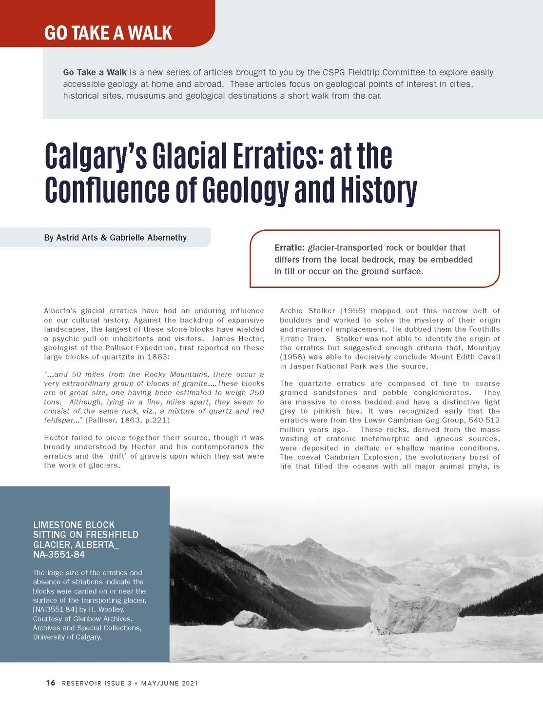
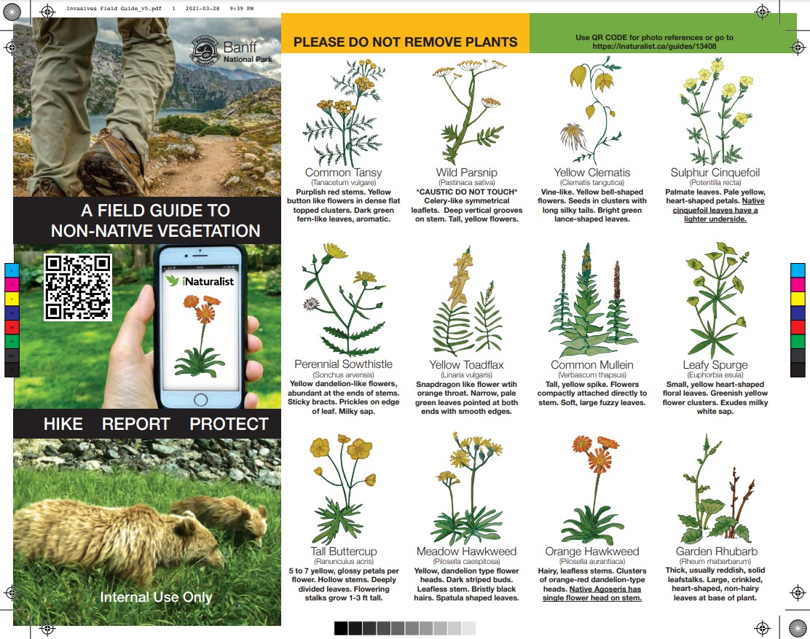
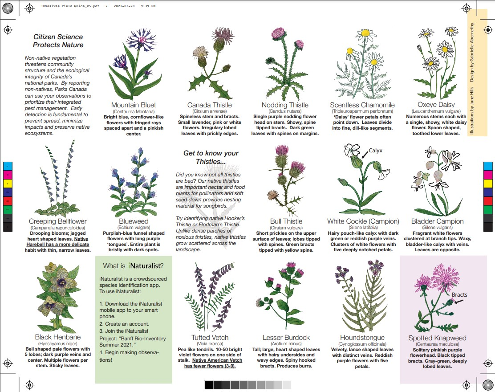

Volunteer
Work
Canadian Energy Geoscience Association
As part of my efforts as field trip coordinator (2020-2022) for the Canadian Energy Geoscience Association (formerly CSPG), several articles were published in the industry magazine "Reservoir" to generate interest in local geology. To the left, is the cover page of a co-authored article on Calgary's glacial erratics.
Parks Canada
An invasives plant field guide was designed for Parks Canada, Banff National Park field unit in 2021. The field guide was conceptualized as part of deliverables for a Conservation Leadership certificate and was later printed and used by Parks volunteers and staff. The project included consultation with Parks' biologists, original artwork by a Parks volunteer, and design and layout in Adobe Illustrator. All design files were delivered to Parks Canada, including continuity documents for future updates to the pamphlet.
 